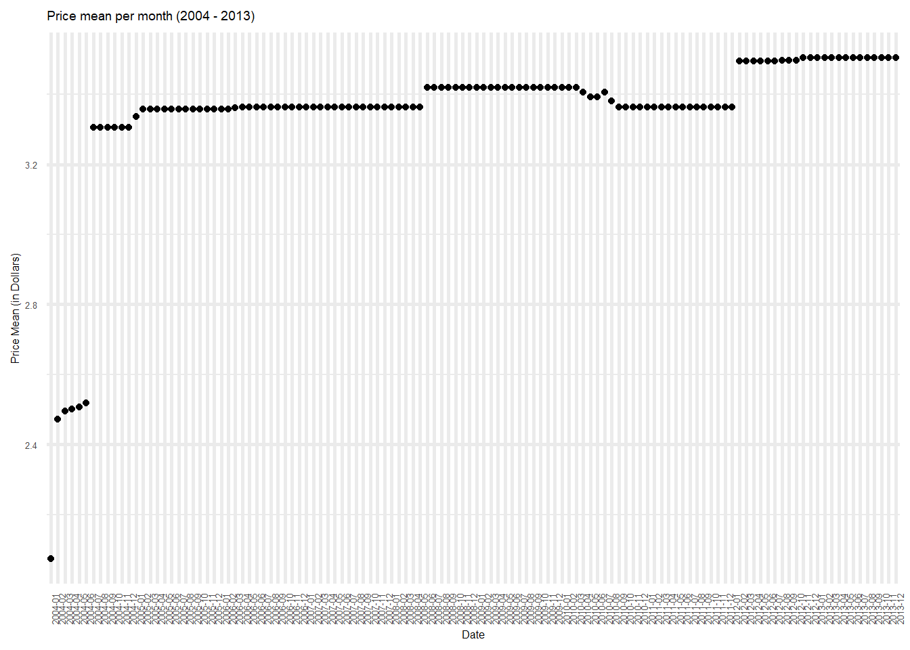

Code
library(tidyverse)
library(lubridate)
library(readxl)
library(ggplot2)
library(tidyr)
knitr::opts_chunk$set(echo = TRUE, warning=FALSE, message=FALSE)library(tidyverse)
library(lubridate)
library(readxl)
library(ggplot2)
library(tidyr)
knitr::opts_chunk$set(echo = TRUE, warning=FALSE, message=FALSE)Today’s challenge is to:
Read in one (or more) of the following datasets, using the correct R package and command.
# Read csv file into dataframe
poultry_data <- read_excel("_data/poultry_tidy.xlsx")
# Printing the top 5 rows
head(poultry_data, 5)# A tibble: 5 × 4
Product Year Month Price_Dollar
<chr> <dbl> <chr> <dbl>
1 Whole 2013 January 2.38
2 Whole 2013 February 2.38
3 Whole 2013 March 2.38
4 Whole 2013 April 2.38
5 Whole 2013 May 2.38dim(poultry_data)[1] 600 4# Getting some initial statistics
unique(poultry_data$Product)[1] "Whole" "B/S Breast" "Bone-in Breast" "Whole Legs"
[5] "Thighs" min(poultry_data$Year)[1] 2004max(poultry_data$Year)[1] 2013The data consists of different poultry pieces (breast, thigh, etc.), and their prices in dollars through different years, starting from 2004, right upto 2013. The prices are documented month-wise for this period. The dataset is composed of 600 rows and 4 columns, which holistically represent this data.
Is your data already tidy, or is there work to be done? Be sure to anticipate your end result to provide a sanity check, and document your work here.
# Transforming Year and Month columns into "Date" column
poultry_data$Date <- format(as.Date((paste(poultry_data$Year,poultry_data$Month,"01",sep="")), "%Y%b%e"), "%Y-%m")
head(poultry_data, 5)# A tibble: 5 × 5
Product Year Month Price_Dollar Date
<chr> <dbl> <chr> <dbl> <chr>
1 Whole 2013 January 2.38 2013-01
2 Whole 2013 February 2.38 2013-02
3 Whole 2013 March 2.38 2013-03
4 Whole 2013 April 2.38 2013-04
5 Whole 2013 May 2.38 2013-05# Get rows having no values in "Price_Dollar column"
poultry_data[is.na(poultry_data$Price_Dollar), ]# A tibble: 7 × 5
Product Year Month Price_Dollar Date
<chr> <dbl> <chr> <dbl> <chr>
1 Bone-in Breast 2004 January NA 2004-01
2 Bone-in Breast 2004 February NA 2004-02
3 Bone-in Breast 2004 March NA 2004-03
4 Bone-in Breast 2004 April NA 2004-04
5 Bone-in Breast 2004 May NA 2004-05
6 Bone-in Breast 2004 June NA 2004-06
7 Thighs 2004 January NA 2004-01# Populating the columns with 0, if no price value is available
poultry_data <- poultry_data %>%
mutate(
Price_Dollar = ifelse(is.na(Price_Dollar), 0 , Price_Dollar)
)
# Grouping data by Product types
poultry_grouped <- poultry_data %>%
group_by(Product) %>%
summarise(
price_mean = mean(Price_Dollar),
price_median = median(Price_Dollar)
)
poultry_grouped# A tibble: 5 × 3
Product price_mean price_median
<chr> <dbl> <dbl>
1 B/S Breast 6.55 6.46
2 Bone-in Breast 3.71 3.90
3 Thighs 2.16 2.22
4 Whole 2.31 2.35
5 Whole Legs 2.03 2.04ggplot(poultry_grouped) +
geom_point(aes(x=Product, y=price_mean)) +
ylab("Price Mean (in Dollars)") +
xlab("Product type") +
ggtitle("Graph to compare product type to mean price by product")
# Boxplot to find price variations in each product type
ggplot(poultry_data, aes(x=Product, y=Price_Dollar, group=Product)) +
geom_boxplot() +
ylab("Price (in dollars)") +
ggtitle("Boxplot for product type price comparison")
# Data grouped by date
poultry_grouped_date <- poultry_data %>%
group_by(Date) %>%
summarise(
price_mean = mean(Price_Dollar),
price_median = median(Price_Dollar)
)
poultry_grouped_date# A tibble: 120 × 3
Date price_mean price_median
<chr> <dbl> <dbl>
1 2004-01 2.07 1.94
2 2004-02 2.47 1.98
3 2004-03 2.50 2.03
4 2004-04 2.50 2.03
5 2004-05 2.51 2.03
6 2004-06 2.52 2.02
7 2004-07 3.31 2.17
8 2004-08 3.31 2.17
9 2004-09 3.31 2.17
10 2004-10 3.31 2.17
# … with 110 more rowsoptions(repr.plot.width = 6, repr.plot.height =3)
graph <- ggplot(poultry_grouped_date, aes(x=Date, y=price_mean)) +
geom_point() +
ylab("Price Mean (in Dollars)") +
theme_minimal() +
theme(text = element_text(size = 6),element_line(size =1)) +
theme(axis.text.x = element_text(angle = 90, hjust = 1)) +
ggtitle("Price mean per month (2004 - 2013)")
graph
filter(poultry_data, Year=="2013" & Month=="November")# A tibble: 5 × 5
Product Year Month Price_Dollar Date
<chr> <dbl> <chr> <dbl> <chr>
1 Whole 2013 November 2.38 2013-11
2 B/S Breast 2013 November 7.04 2013-11
3 Bone-in Breast 2013 November 3.90 2013-11
4 Whole Legs 2013 November 2.04 2013-11
5 Thighs 2013 November 2.16 2013-11Any additional comments?
Are there any variables that require mutation to be usable in your analysis stream? For example, are all time variables correctly coded as dates? Are all string variables reduced and cleaned to sensible categories? Do you need to turn any variables into factors and reorder for ease of graphics and visualization?
For this data, I have used the Month and Year values to create a new “Date” column. I have then used this column, as well as the Product column, to group the data to get mean price and median price values. While the graphs formed by this grouping are not very informative, on scaling the data, this could be extremely informative.
Document your work here.
# Reading into dataframe
data <- read_excel('_data/debt_in_trillions.xlsx')
data <- data %>%
separate(c("Year and Quarter"), c("Year", "Quarter"), ":")
data# A tibble: 74 × 9
Year Quarter Mortgage `HE Revolving` `Auto Loan` Credi…¹ Stude…² Other Total
<chr> <chr> <dbl> <dbl> <dbl> <dbl> <dbl> <dbl> <dbl>
1 03 Q1 4.94 0.242 0.641 0.688 0.241 0.478 7.23
2 03 Q2 5.08 0.26 0.622 0.693 0.243 0.486 7.38
3 03 Q3 5.18 0.269 0.684 0.693 0.249 0.477 7.56
4 03 Q4 5.66 0.302 0.704 0.698 0.253 0.449 8.07
5 04 Q1 5.84 0.328 0.72 0.695 0.260 0.446 8.29
6 04 Q2 5.97 0.367 0.743 0.697 0.263 0.423 8.46
7 04 Q3 6.21 0.426 0.751 0.706 0.33 0.41 8.83
8 04 Q4 6.36 0.468 0.728 0.717 0.346 0.423 9.04
9 05 Q1 6.51 0.502 0.725 0.71 0.364 0.394 9.21
10 05 Q2 6.70 0.528 0.774 0.717 0.374 0.402 9.49
# … with 64 more rows, and abbreviated variable names ¹`Credit Card`,
# ²`Student Loan`# Group data by year, and get total and mean debt per year
data_grouped <- data %>%
group_by(Year) %>%
summarise(total_debt_by_year = sum(Total),
mean_debt_by_year = mean(Total))
# Plot the mean debt per year
ggplot(data_grouped, aes(x=Year, y=mean_debt_by_year, group=1)) + ylab("Mean debt (in Trillions)") +
geom_point() +
geom_line() +
ggtitle("Year vs Mean debt (in Trillions) ")
data_grouped# A tibble: 19 × 3
Year total_debt_by_year mean_debt_by_year
<chr> <dbl> <dbl>
1 03 30.2 7.56
2 04 34.6 8.66
3 05 38.5 9.62
4 06 43.6 10.9
5 07 47.8 12.0
6 08 50.5 12.6
7 09 49.4 12.3
8 10 47.6 11.9
9 11 46.7 11.7
10 12 45.5 11.4
11 13 45.2 11.3
12 14 46.8 11.7
13 15 47.9 12.0
14 16 49.5 12.4
15 17 51.7 12.9
16 18 53.6 13.4
17 19 55.6 13.9
18 20 57.5 14.4
19 21 29.6 14.8 # Group data by year and get mean value statistics for each debt type
data_by_debt_type <- data %>%
group_by(Year) %>%
summarise(mort_mean = mean(Mortgage),
herev_mean = mean(`HE Revolving`),
auto_mean = mean(`Auto Loan`),
cred_mean = mean(`Credit Card`),
stud_mean = mean(`Student Loan`))
data_by_debt_type# A tibble: 19 × 6
Year mort_mean herev_mean auto_mean cred_mean stud_mean
<chr> <dbl> <dbl> <dbl> <dbl> <dbl>
1 03 5.22 0.268 0.663 0.693 0.246
2 04 6.09 0.397 0.736 0.704 0.300
3 05 6.80 0.534 0.780 0.724 0.377
4 06 7.87 0.595 0.806 0.746 0.450
5 07 8.79 0.626 0.808 0.804 0.524
6 08 9.26 0.685 0.804 0.853 0.604
7 09 9.00 0.710 0.742 0.818 0.688
8 10 8.65 0.680 0.707 0.742 0.777
9 11 8.43 0.633 0.721 0.697 0.859
10 12 8.10 0.584 0.759 0.676 0.935
11 13 7.93 0.539 0.829 0.671 1.02
12 14 8.14 0.517 0.917 0.677 1.13
13 15 8.20 0.497 1.02 0.708 1.20
14 16 8.39 0.477 1.12 0.742 1.28
15 17 8.74 0.45 1.20 0.798 1.36
16 18 9.05 0.426 1.25 0.839 1.43
17 19 9.41 0.398 1.31 0.881 1.49
18 20 9.85 0.368 1.36 0.834 1.54
19 21 10.3 0.328 1.40 0.778 1.58 # Preprocess the data, to pivot it for graphing
col_names = names(data_by_debt_type)
col_names <- col_names[!col_names %in% c("Year")]
col_names [1] "mort_mean" "herev_mean" "auto_mean" "cred_mean" "stud_mean" # Pivot the data such that each case represents the mean debt type for a given year
pivoted_debt_data <- pivot_longer(data_by_debt_type, cols=col_names,
names_to = "debt_type",
values_to = "debt_mean_value")
# Graphing the data
ggplot(pivoted_debt_data, aes(x = Year)) +
geom_line(aes(y = debt_mean_value, group=debt_type, color=debt_type)) +
xlab("Year") +
ylab("Debt mean (in trillions) ") +
ggtitle("Mean debt value across years, per debt type") +
guides(color = guide_legend(title="Debt type"))
pivoted_debt_data# A tibble: 95 × 3
Year debt_type debt_mean_value
<chr> <chr> <dbl>
1 03 mort_mean 5.22
2 03 herev_mean 0.268
3 03 auto_mean 0.663
4 03 cred_mean 0.693
5 03 stud_mean 0.246
6 04 mort_mean 6.09
7 04 herev_mean 0.397
8 04 auto_mean 0.736
9 04 cred_mean 0.704
10 04 stud_mean 0.300
# … with 85 more rowsAny additional comments?
We can see that the mortgage debt has consistently been higher across all the years that the data has been collated for. The mortgage debt is almost 5 time the average debt of all other debt types.